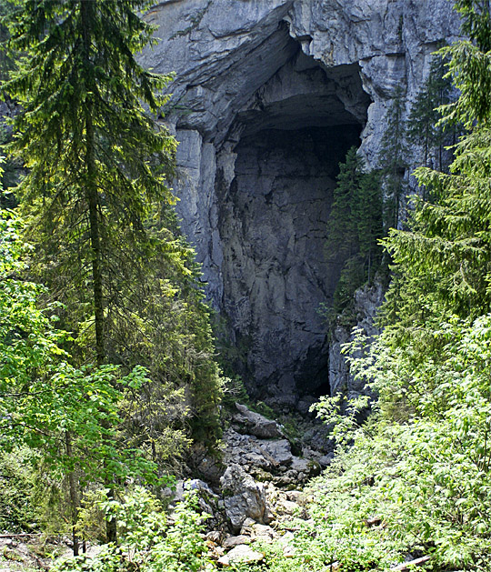

Csodavár A száz méternél is mélyebb, függőleges falú víznyelő hatalmas teremek berogyásával keletkezett hármas dolina, és barlang a maga nemében páratlan látnivaló! 1887-ben véletlenül fedezte fel egy erdőmérnök, s később Czárán Gyula is beépítette útvonalai közé. Mi a Ponor rét felől közelítjük meg, leereszkedünk az I-es számú dolinába, ahol a Csodavár 74 m magas Nagy Portálja látható. Bemegyünk a barlangba és egy kis üregen keresztül leereszkedünk a földalatti folyó szintjére. Ha a vízállás engedi végigmegyünk a barlang járható szakaszán át a II-es Dolinába, amelynek falai a 200 métert is meghaladják. Itt egy meredek ösvényen feljutva csodálhatjuk meg ismét a víznyelőket a négy "kiépített" erkélyről. 
|
|
 |
 |
 |
 |
 |
 |
| Galbena kitörés, Eminenciás vízesés, Galbena-szurdok. |
| Csodavár |
| Szamos Bazár |
| Nagy Phaeton |
| Boga csűr |
| Ördög malom vízesés |
| Dragan völgy |
| Még több röviden... |